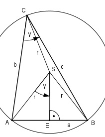
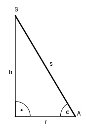
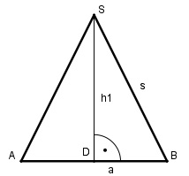

Aufgabe 169 Wie groß sind die Oberfläche O und das Volumen V einer Dreieckspyramide mit 10 cm langen Seiten- kanten, wenn die Seiten der Grundfläche a = 5 cm, b = 7 cm und c = 8 cm lang sind? Wie groß ist der Winkel α, den die Seitenkanten mit der Grundfläche bilden? Wie groß ist der Winkel β, den die Grundfläche mit der Seitenfläche über a bildet? Grundfläche der Pyramide:

Die Projektionen der Seitenkanten auf die Grundfläche müssen gleich lang sein, da auch die Seitenkanten s gleich lang sind. Dies ist dann der Fall, wenn die Spitze S der Pyramide über dem Mittelpunkt des Umkreises liegt. Die Projektionen sind dann gleich dem Umkreisradius r. Im Dreieck ABC: Fall SSS: Cosinussatz: a2 = b2 + c2 - 2 * b * c * cos γ |+2*b*c*cos γ a2 + 2 * b * c * cos γ = b2 + c2 |-a2 2 * b * c * cos γ = b2 + c2 - a2 |:2 * b * c b2 + c2 - a2 cos γ = -------------- = 2 * b * c 72 cm2 + 82 cm2 - 52 cm2 = -------------------------- = 2 * 7 cm * 8 cm = 0,7857 --> γ = 38,2° Der Umfangswinkel γ über der Sehne AB = a ist gleich dem halben Mittelpunktswinkel bei S. Im Dreieck AES: a/2 sin γ = ----- |*r r r * sin γ = a/2 |*2 2 * r * sin γ = a |:2 * sin γ a r = ----------- = 2 * sin γ 5 cm 5 cm = ----------------- = ------------- = 4 cm 2 * sin 38,2° 2 * 0,6184
Höhe der Pyramide: (Schnitt entlang der Strecke AS) Satz von Pythagoras: s2 = r2 + h2 | -r2 h2 = s2 - r2 h2 = 102 cm2 - 42 cm2 = 84 cm2|√ h = 9,2 cm Neigungswinkel α der Seitenkante S zur Grundfläche: h 9,2 cm sin α = ----- = --------- = 0,92 --> α = 66,9° s 10 cm
Höhen der Seitenflächen: Höhe über AB: Im Dreieck DBS: Satz von Pythagoras: s2 = h12 + (a/2)2 | -(a/2)2 h12 = s2 - (a/2)2 h12 = 102 cm2 - (5/2)2 cm2 = 93,75 cm2 |√ h1 = 9,7 cm Höhe über AC: h22 = 1002 cm2 - (7/2)2 cm2 = 87,75 cm2 |√ h2 = 9,4 cm Höhe über BC: h32 = 1002 cm2 - (8/2)2 cm2 = 84 cm2 |√ h3 = 9,2 cm O = Seitenfläche 1 + Seitenfläche 2 + + Seitenfläche 3 + Grundfläche a * h1 b * h2 c * h3 O = -------- + --------- + --------- + 2 2 2 b * c * sin γ + ---------------- 2 5 cm * 9,7 cm 7 cm * 9,4 cm O = ---------------- + --------------- + 2 2 2 8 cm * 9,2 cm 7 cm * 8 cm * sin γ + --------------- + + ----------------------- 2 2 O = 24,25 cm2 + 32,9 cm2 + 36,8 cm2 + + 28 cm2 * sin 38,2° O = 24,25 cm2 + 32,9 cm2 + 36,8 cm2 + + 28 cm2 * 0,6184 O = 111,3 cm2 b * c * sin γ * h V = -------------------- = 2 * 3 7 cm * 8 cm * 0,6184 * 9,2 cm = ------------------------------- = 53,1 cm3 6 Neigungswinkel β der Seitenfläche über a zur Grundfläche: h 9,2 cm sin β = ---- = -------- = 0,9485 --> β = 71,5° h1 9,7 cm